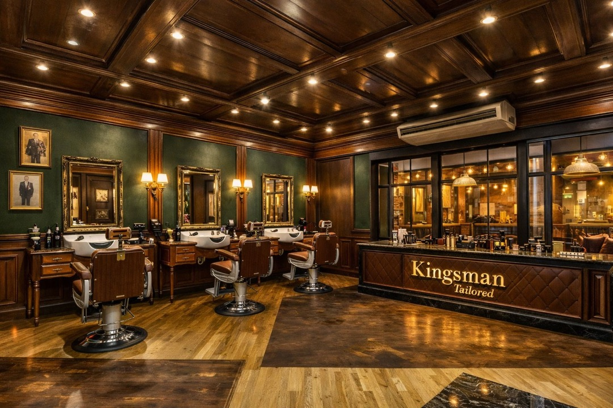

Our Story
Hidden in the heart of the City, where Victorian passages whisper of magic and craftsmanship endures.

Ship Tavern Passage
"There is a narrow passage beside Leadenhall Market that most Londoners walk past without a second glance. Tucked between the grand Victorian facades, it whispers of another era."
Ship Tavern Passage sits adjacent to Bull's Head Passage — the very alleyway used as the entrance to Diagon Alley in Harry Potter and the Philosopher's Stone. Where film-goers once stepped through a magical doorway into a world of wands and wizardry, our clients step through a rather different kind of portal.
At number 12, behind a door that yields only to those who know to look for it, sits The Kingsmen Barbers. Three chairs. No sign on the street. Just the quiet confidence of a place that doesn't need to advertise — because the gentlemen who find it never leave.
The Vision
"Every Kingsman needs a tailor. Every gentleman needs a barber."
The Kingsmen Barbers is an exclusive membership barbershop for the City's most discerning professionals. Inspired by the bespoke tailoring houses of Savile Row and the fictional Kingsman secret service, we believe that grooming is not vanity. It is preparation. It is armour.
Our vision is simple: the finest barbering in London, delivered with the discretion and precision of a Savile Row fitting, in a space that feels like stepping into the back room of a Kingsman tailor shop.
The interior draws its aesthetic from the Kingsman Tailored concept — rich dark green tufted leather, brass fixtures, mahogany wood, and glass-encased shelving displaying the world's finest grooming products and niche fragrances. Every surface has been chosen. Every detail has been considered.

Three Chairs Only
The Kingsmen Barbers is deliberately compact. Three barber chairs, each occupied by a craftsman of a different rank. No crowds, no waiting room noise — only the quiet precision of blade on skin and the soft clink of brass instruments.
The Craftsmen
Each barber at The Kingsmen holds a distinct rank, reflecting their years of experience, breadth of skill, and mastery of the craft.

The Aesthetic
"The shop at 12 Ship Tavern Passage is being reborn. Inspired by the Kingsman Tailored concept — the fictitious Savile Row front for a secret intelligence agency — our redecoration draws from the same world of understated British luxury."
Deep racing green tufted leather on every wall. Brass instrument racks holding straight razors and Sheffield steel. Mahogany counters lined with glass cabinets displaying attars and niche colognes — Penhaligon's, Truefitt & Hill, Geo F Trumper, Floris London.
The result is a space that feels less like a barbershop and more like the back room of a very particular kind of tailor. The kind where the measuring tape is just the beginning.
Philosophy
A well-groomed gentleman isn't vain — he's prepared. Whether it's a board meeting, a client dinner, or a first date, the right cut and the right shave give you an edge that no suit alone can provide.
We do not rush. A Kingsmen haircut takes 45 minutes because 45 minutes is what it takes. The consultation, the hot towel, the cut, the style, the finishing cologne — each step is essential.
100 members. Three chairs. This isn't a marketing trick — it's simple arithmetic. We limit membership because quality cannot scale beyond the hours in the day and the hands in the shop.
We serve Seedlip, Lyre's non-alcoholic spirits, artisan coffee, and English tea. Our gentlemen leave sharper than when they arrived — not the other way around.